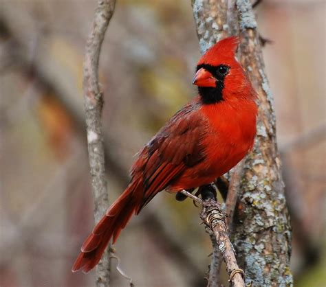

Canandaigua, NewYork
St. John Fisher University
Mascot of the St. John Fisher University
Cardinal
The Cardinal head alone is used to represent athletics, the University,
and/or the students of the University.
The Cardinal head faces right and
is available in color, black and white, cardinal red, white, and gray scale.
Do not flip the head of the Cardinal to face left. Do not stretch, distort,
or embellish the Cardinal head in any way.
Fun Facts about Cardinal
- Cardinals have an above-average lifespan compared to other bird species.
- They get their name from the Roman Catholic Church.
- Cardinals have a range of over two million square miles.
- They are a popular state bird in Ohio, Illinois, Indiana states
- They’re easy to attract if the right food is used.

Back to Index